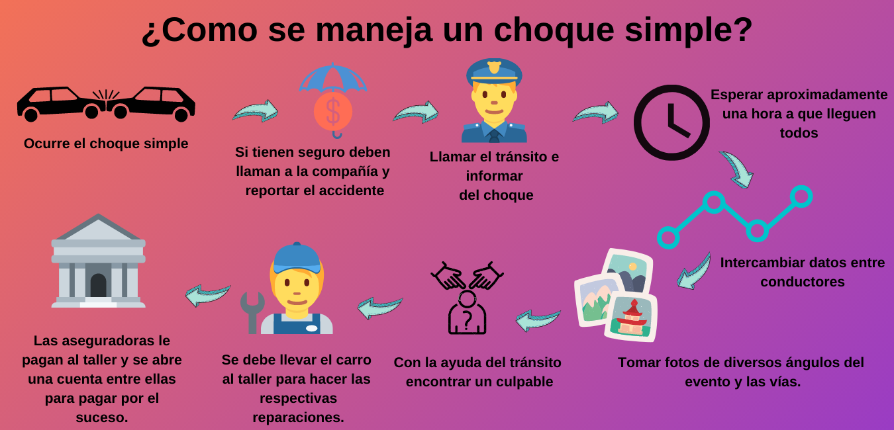

¿Cómo la ineficiencia en el manejo de accidentes de tránsito
en Colombia genera pérdidas en la economía?

Algunos datos
Los choques simples tardan entre una hora y media y dos horas en ser resueltos
El 68% de los accidentes que ocurren en Colombia son simples
En Bogotá se presentan 500 choques simples al día
El costo promedio por accidente es $2'333.700
Los accidentes de tránsito cuestan a la mayoría de los países el 3% de su PIB
En 2019 el PIB fue de 289.023M.€, daría como resultado que más de 8500 millones de euros es lo que le cuesta a Colombia tratar los accidentes de tránsito.
¿Como afecta esto a los diferentes agentes del mercado?
Personas
Cuando una persona se ve involucrada en un choque simple, el choque tarda entre una hora y media y dos horas en resolverse. Tiempo que pierde de su trabajo por el que puede que no le paguen si es una persona que trabaja por horas, si es independiente perderá tiempo para su negocio, su ánimo se verá afectado para el resto del día restando productividad a la persona, si esta iba a su casa después del trabajo perderá tiempo de calidad con su familia o tiempo de descanso para el otro día.
Dado que en ciudades como Bogotá se generan 500 choques al día, los daños a las personas naturales no solo se sienten cuando estos se chocan sino también cuando otra persona se choca y genera taco generando los mismos problemas para las personas.
Empresas
Cuando a una empresa le chocan uno de sus vehículos, estos dejan de andar mientras se resuelve el choque, por lo que pierde productividad no solo en el trabajador que lo maneja, sino también en el capital que representa ese vehículo.
Las personas que llegan a trabajar a una empresa después de haberse chocado llegan con mal genio, y no son muy productivas en las horas siguientes al choque, pues perdieron mucho tiempo.
Si el choque fue yendo a donde uno de los clientes, perder la reunión puede causar un detrimento en la relación con el cliente.
Dado que en ciudades como Bogotá se generan 500 choques al día, los daños a las empresas no solo se sienten cuando su empresa se ve involucrada en un choque sino también cuando otra persona se choca y genera taco generando los mismos problemas para las empresas.
Gobierno
El impacto al gobierno lo vemos ya que los choques en la economía cuestan 8500 millones de euros, y como los choques simples son el 68% de los choques, los choques simples tienen un costo de 5780 millones de euros. cada año en la economía. Más todos los costos ocultos que se generan en cada uno de los agentes del mercado.
Aseguradoras
Tienen una estructura muy compleja, lo que los lleva tener costos fijos muy altos, ya que necesitan tener muchas oficinas para empleados, sobre todo abogados y también costos variables elevados, porque debido a la alta demanda se ven obligados en algunas ocasiones a contratar más empleados. Produciendo así que los cobros a los usuarios sean mayores. Todo esto lo que hace es dificultar la aparición de competidores en el sector, debido a lo intrincado que es el proceso de montar una aseguradora, derivando así muchas veces en monopolios o participaciones de mercado muy altas de pocas empresas.
General
El medio ambiente se ve muy afectado cuando se presenta un choque, sobre todo en una vía de alto flujo vehicular, ya que la colisión hace que se entorpezca el tráfico hasta tal punto de quedar en muchos casos paralizado por completo, provocando que cientos de carros estén encendidos durante más tiempo (el tiempo promedio de atender un choque en Colombia está entre hora y media y dos horas), llevando a una enorme contaminación de la ciudad por la emisión de los gases de estos vehículos.
F(x,y,z,t)=x*yz*t
Cada que una persona se choca esta no solo pierde tiempo, sino también todas las personas que quedan en el choque con ella. Esto depende mucho de la cantidad de gente que queda atrapada en los trancones, el tiempo perdido lo vemos como una función que crece con el flujo de vehículos, disminuye con el número de carriles libres y se divide con el número de carriles que tapa el choque.
x siendo el flujo de vehículos
y siendo el número de carriles libres después del choque
z siendo el número de carriles tapados después del choque.
t siendo el tiempo mientras que se soluciona
F(x,y,z,t)=x*yz*t
Estado emocional de todos los actores, pues chocarse es bien sad, y estar en un taco porque alguien se chocho es aún más sad.
Actualmente los choques en Colombia

Integrantes:
-Samuel Mejía
-Nicolas Villegas
-Esteban Gutiérrez
Confiamos que con este análisis microeconómico podemos revolucionar la manera como se manejan los accidentes de tránsito en el mundo generando beneficios para todos los actores mencionados en la página, cambiando la manera como se hacen los análisis actuariales en los accidentes de tránsito generando enormes ahorros.